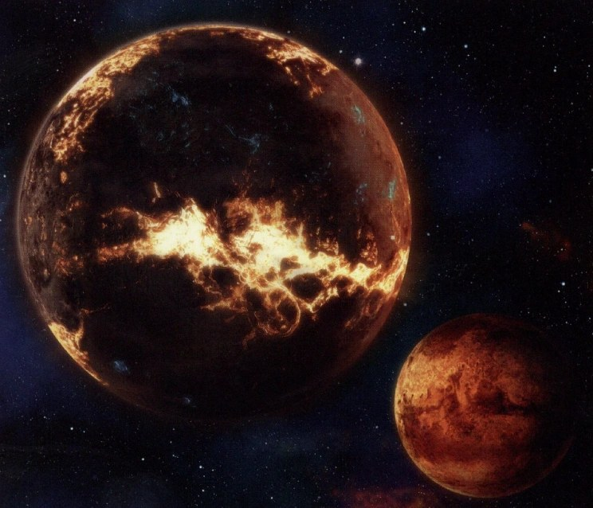
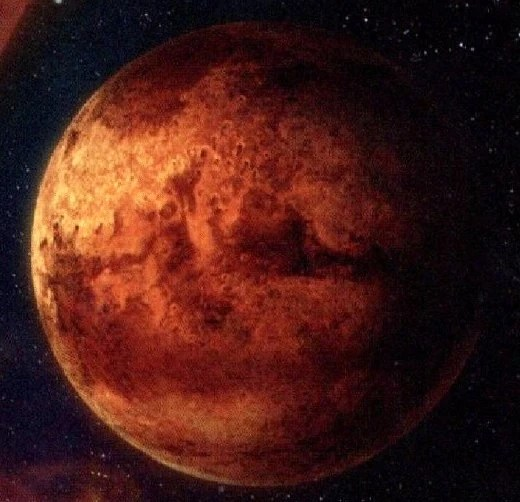

Nocturne
| Nocturne | |
|---|---|
| Homeworld of the Salamanders | |
 Nocturne and its moon Prometheus during the Time of Trial Artwork © Games Workshop | |
| System | Nocturne System |
| Segmentum | Segmentum Ultima |
| Classification | Death world (volcanic); Feudal world; Chapter world |
| Ruler | Chapter Master of the Salamanders (Tu'Shan), Regent of Prometheus |
| Population | c. 15 million |
| Largest city | Hesiod |
| Moon | Prometheus |
| Tithe grade | Aptus Non (exempt) |
| Notable features | The Sanctuary Cities; Mount Deathfire; the Pantheon on Prometheus |
Nocturne is a volcanic death world of the Segmentum Ultima and the homeworld of the Salamanders. Its large moon, Prometheus, holds the Chapter's fortress-monastery. The planet's name means "night", from the ash that darkens its skies. Every fifteen standard years the moon's approach brings the Time of Trial, a season of earthquakes, eruptions and tidal waves followed by a bitter winter. Its people live in fortified underground Sanctuary Cities and are bound to the Salamanders more closely than almost any other population is to its Chapter.[1][2]
Nocturne was the world on which the primarch Vulkan grew up, and the Salamanders preserve his teaching that the strong must protect the weak. The planet has been attacked many times by raiders, by the Drukhari and by the forces of Chaos, and it has never fallen.[2][3]
History
[edit]Before the primarch
[edit]Nocturne was settled before the Age of Strife, and its people survived the age as clans of herders, smiths and miners. Their settlements were constantly destroyed by the Time of Trial and raided by slavers from the stars, whom Imperial scholars identify as the Drukhari. The clans built their homes underground and walled their cities, and their culture came to value endurance, craftsmanship and mutual protection.[2]
Vulkan
[edit]The infant Vulkan came down near the city of Hesiod and was adopted by N'bel, a blacksmith of that city, who taught him the craft of the forge. As a young man he led the defence of Hesiod against a raid by the slavers, and it is said that he slew their leader himself. The Nocturneans held him in awe, and he became their protector and teacher.[3][2]
When the Emperor came to Nocturne, he did not reveal himself, but entered a contest that Vulkan had proclaimed among the clans. The contest included the hunting of a great fire drake on Mount Deathfire. Both the Emperor and Vulkan killed one; according to the legend, the Emperor saved Vulkan from falling into the lava while still holding his own drake, and Vulkan acknowledged him as the greater. Vulkan then took command of the XVIII Legion, which made Nocturne its home.[3][2]
The Great Crusade and the Heresy
[edit]The Legion recruited from the clans of Nocturne, and its warriors kept close ties to their families and cities. The Salamanders were nearly destroyed at the Drop Site Massacre on Isstvan V in 006.M31, and so few survived that they took no part in the Second Founding, keeping their single Chapter and their number, XVIII. Vulkan survived the Heresy but was later lost; the Salamanders believe he will return.[4][2]
Vulkan left behind the Tome of Fire, a book of riddles and prophecies, and nine artefacts that he hid across the galaxy for his sons to find. The quest for them is a central part of the Chapter's tradition, and several have been recovered.[2]
From M31 to M41
[edit]
Nocturne has been attacked many times. In 761.M41 the daemon engines of a Chaos Warpsmith called the Soulsmelter assaulted the planet, and Chapter Master Tu'Shan opened the Chapter's master reliquaries to destroy them. In 975.M41 the renegade sorcerer Nihilan, formerly a Librarian of the Salamanders, drove a shaft into Mount Deathfire and attempted to steal one of the lost books of Vulkan. He was driven off by the Chief Librarian Vel'cona, but escaped.[2]
The Era Indomitus
[edit]The Salamanders received Primaris Space Marines in the Era Indomitus and have fought in many of its campaigns, including the Indomitus Crusade. The Chapter has taken care that the new warriors are tied to the clans and cities of Nocturne in the old way, and Primaris aspirants are now drawn from the Sanctuary Cities. Nocturne remains in Imperial hands.[5]
Geography
[edit]
Nocturne has a standard gravity and a temperate climate in its long quiet periods, but its surface is dominated by volcanoes, ash deserts, acid rivers and petrified forests. Its sky is darkened by ash for much of the year. The planet and its moon form a near-binary pair, and Prometheus's eccentric orbit raises enormous tidal stresses. During the Time of Trial thousands of volcanoes erupt, earthquakes level settlements and tidal waves cross the seas. The eruptions are followed by a winter that lasts about a quarter of a Nocturnean year.[2]
The Time of Trial also exposes rich veins of gems and metals, which the clans mine and trade with the Imperium for food and livestock. Nocturne's fauna is reptilian and saurian: the salamanders, the great fire drakes of Mount Deathfire, and other beasts that hunt the dunes or fly on leathery wings.[2]
Notable places include Mount Deathfire, the largest volcano and the home of the fire drakes; the Pyre Desert; the Arridian Plain; the Dragonspire Ridge; and the Acerbian Sea.[2]
Sanctuary Cities
[edit]Nocturne's people live in seven great Sanctuary Cities, built partly underground and walled against both the Time of Trial and raiders. Hesiod, Vulkan's home, is the largest; the others recorded are Themis, Epimethus, Heliosa, Skarokk and Clymene. They stand on the sites of the settlements of Nocturne's ancient tribal kings, and are protected by void shields and reinforced walls. In the Time of Trial they open their gates to the nomads of the surrounding lands. Each city holds a bastion of one of the Chapter's companies, with its own reclusiam, armoury, forges and Vault of Remembrance, and each company recruits from its own city.[2][a]
Prometheus
[edit]Prometheus is the Salamanders' fortress-monastery, a fortified spaceport and orbital dock where the Chapter's ships are maintained. Within it lies the Pantheon, a council chamber with eighteen seats, in memory of the XVIII Legion, where the Chapter's masters consult the Tome of Fire. The Chapter Master bears the title Regent of Prometheus.[2]
Society
[edit]Nocturneans are tall, strong and resilient, shaped by the harshness of their world. They are skilled smiths and miners, and the forge is honoured in every city. They practise the Promethean Cult, a creed that teaches self-reliance, sacrifice and the protection of others, honours fire as a symbol of strength and renewal, and is accepted by the Ecclesiarchy as a form of the Imperial faith.[2][6]
The Salamanders live among the people when not at war, and serve as leaders of the cities and clans. Recruitment begins in childhood: aspirants are apprenticed to a Salamander, taught the ways of the forge, and must repeat the trials of Vulkan's contest, ending with the capture of a salamander on Mount Deathfire. Those who succeed are taken to Prometheus. After implantation the Chapter's warriors develop black skin and red eyes, the result of their gene-seed and of the radiation of their world. The Ecclesiarchy does not consider this a heretical mutation.[2]
Relations with the Imperium
[edit]Nocturne pays no tithe and has no planetary governor; the Chapter Master rules it as Regent of Prometheus, and the clans govern their own cities under the Salamanders' protection. The planet trades its gems and metals with merchants of the Imperium for grain and livestock, which its own surface cannot reliably provide. Imperial visitors are few, and most come with the Chapter's leave. The Salamanders' insistence on protecting civilians, which they learned from the clans of Nocturne, has made them welcome on many worlds, and Imperial commanders have recorded that the Chapter will divert forces from an attack to evacuate a threatened population. Nocturneans regard this as the plain duty of the strong.[2][1]
Timeline
[edit]| Date | Event |
|---|---|
| Age of Technology | Nocturne is settled, and its people form the first Sanctuary Cities of walled stone.[b] |
| Age of Strife | The Sanctuary Cities and the psychic bond to the earth of Nocturne survive the collapse of order.[c] |
| Late M30 | The Great Crusade reaches Nocturne, which becomes the homeworld of the Salamanders Legion.[d] |
| M31–M32 | The Pyreum and the Great Crucible are founded as the Salamanders claim the world.[e] |
| 761.M41 | The first assault on Nocturne: daemon engines of the Soulsmelter strike the Great Crucible, and the Salamanders hold the world. |
| 975.M41 | The second assault on Nocturne: Nihilan leads an Iron Warriors warband to mine the Great Crucible's ore. |
| Early M42 | Nocturne remains the homeworld of the Salamanders and a Chapter Planet of the Imperium. |
See also
[edit]Notes
[edit]- ^ The name of the seventh city is not given in the records available to this article. Older Imperial accounts also mention a city called Aethon, which may be the missing seventh or an alternative name for one of the others.
- ^ Estimated; no record gives an exact year.
- ^ Estimated; no record gives an exact year.
- ^ Estimated; no record gives an exact year.
- ^ Estimated; no record gives an exact year.
References
[edit]- ^ a b Codex Supplement: Salamanders (8th Edition), pp. 10-18, 21, 24-25, 30-33, 41-42, 56. Games Workshop. Kyme, Nick. Salamanders (novel). Black Library.
- ^ a b c d e f g h i j k l m n o p Kyme, Nick. Firedrake (novel). Black Library. Kyme, Nick. Nocturne (novel). Black Library.
- ^ a b c Old Earth (novel) by Nick Kyme. Codex: Space Marines (6th Edition), pp. 8, 19, 29, 54-59, 73, 78, 112, 144-145. Games Workshop.
- ^ Codex: Space Marines (5th Edition), pp. 8, 26. Games Workshop. Kyme, Nick. Trial by Fire (Short Story). Black Library.
- ^ Tome of Fire (Anthology), "Hell Night," and "The Firebrand," (Short Stories) by Nick Kyme. Dataslate: Adeptus Astartes Storm Wing, pg. 8.
- ^ First Founding (Background Book), pp. 254-255. Index Astartes IV, "Promethean Warriors - The Salamanders Space Marine Chapter" .